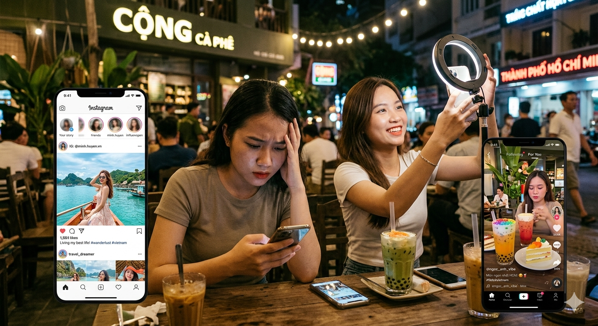
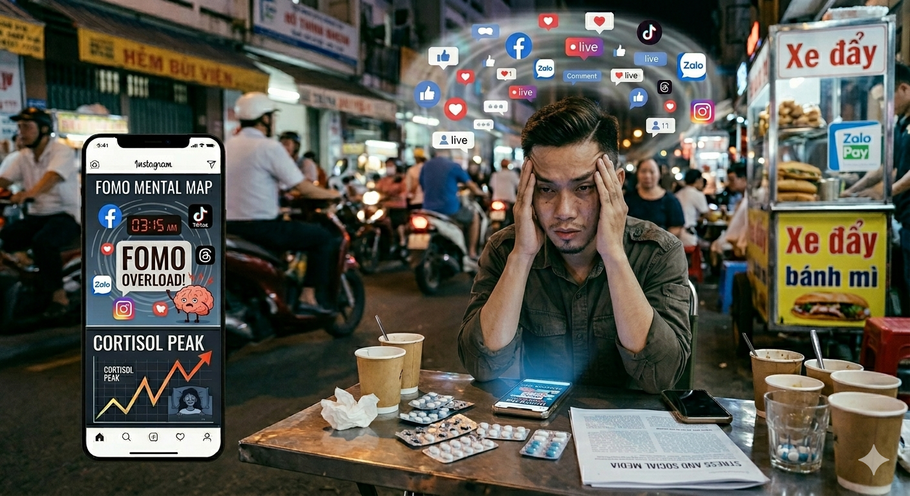

Trong một thế giới luôn kết nối, việc giữ cho tâm trí được bình yên trở nên khó khăn hơn bao giờ hết. Sức khỏe tinh thần cũng quan trọng không kém gì sức khỏe thể chất và cần được chăm sóc mỗi ngày.
Theo Tổ chức Y tế Thế giới (WHO), khoảng 1 tỷ người trên toàn cầu đang sống với các rối loạn sức khỏe tinh thần, và tỷ lệ này tăng 25% trong đại dịch COVID-19 do sự cô lập kỹ thuật số. Trong xã hội Việt Nam, nơi 70% dân số sử dụng mạng xã hội hàng ngày, việc chăm sóc tinh thần trở thành ưu tiên cấp bách để tránh burnout và trầm cảm.
Tác động của mạng xã hội
Tác động về so sánh xã hội
Mạng xã hội tạo ra văn hóa so sánh không lành mạnh, nơi mọi người thường đăng tải những khoảnh khắc hoàn hảo. Điều này dẫn đến cảm giác tự ti khi so với influencer hoặc bạn bè trên Instagram, gây ra lo âu và trầm cảm. Ở Việt Nam, với hàng triệu người dùng TikTok, xu hướng này càng phổ biến.

Tác động về nỗi sợ bị bỏ lỡ (FOMO)
FOMO khiến người dùng cảm thấy phải "online" 24/7 để không bỏ lỡ thông tin, dẫn đến stress và mất ngủ. Nghiên cứu cho thấy, việc kiểm tra điện thoại thường xuyên làm tăng hormone cortisol, ảnh hưởng đến sức khỏe tinh thần.

Tác động về ảo tưởng hoàn hảo
Ứng dụng như TikTok và Instagram sử dụng bộ lọc và chỉnh sửa để tạo ảo tưởng hoàn hảo, làm người dùng cảm thấy bản thân không đủ tốt. Nghiên cứu từ Đại học Harvard cho thấy, giới hạn thời gian lướt web dưới 2 giờ/ngày có thể giảm 30% nguy cơ trầm cảm. Hãy thử các công cụ như Screen Time trên iOS hoặc Digital Wellbeing trên Android để theo dõi và kiểm soát.
Khi nào cần tìm kiếm sự giúp đỡ?
Đừng ngần ngại tìm kiếm sự tư vấn từ các chuyên gia tâm lý khi bạn cảm thấy quá tải hoặc bế tắc. Nhận biết và thừa nhận cảm xúc của mình là biểu hiện của sự mạnh mẽ, không phải sự yếu đuối.
Các dấu hiệu cần chú ý bao gồm mất ngủ kéo dài, thay đổi khẩu vị ăn uống, hoặc cảm giác cô đơn dù có hàng nghìn lượt thích trên mạng. Ở Việt Nam, bạn có thể liên hệ các dịch vụ như Trung tâm Tư vấn Tâm lý Quốc gia (hotline 1900 2324) hoặc ứng dụng MindStrong cho tư vấn trực tuyến miễn phí. Đừng chờ đến khi quá muộn – hành động sớm có thể ngăn ngừa các vấn đề nghiêm trọng như rối loạn lo âu.